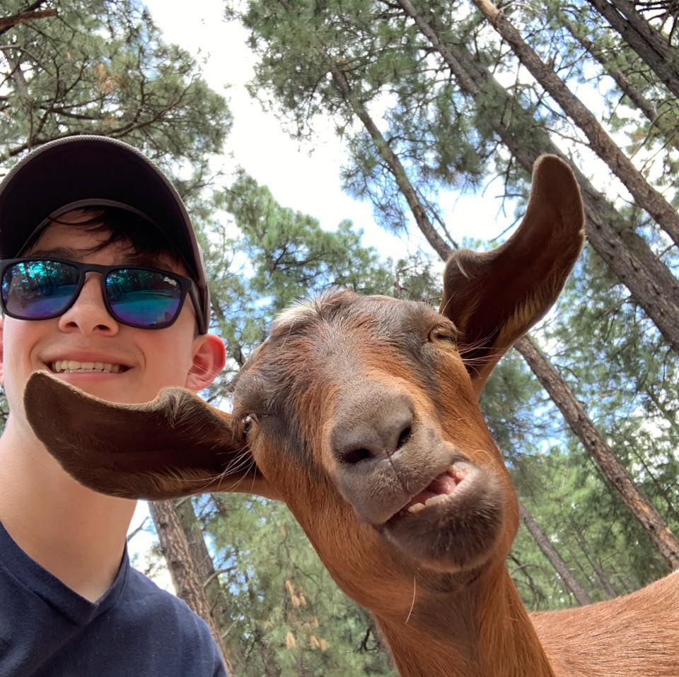

About me
Hey, I'm Leo. I am an apprentice software developer at Barclays. I started developing an interest in computers from around the age of 10 and I continued to pursue my interest through education in highschool. After highschool, I also did computer science in college at A-Level where I suprisingly started to lose interest in computer science and felt that it was something that was not for me, so I took a break. During this break I worked as an associate accountant and I also felt like this wasn't for me and I started looking at coding again... I found a website that could teach me how to code in many languages by setting me challanges and projects to complete, I did this whilst waiting for my apprenticeship to start, which is where I am now.
I have a very open mindset when it comes to work and life, I am always looking at new things to try and more efficient ways to solve problems. I am passionate about continuous learning and improvement, always exploring new tools and techniques to enhance my efficiency and refine my skills. I believe in staying adaptable and embracing new challenges, striving to deliver better solutions with each project.
When I am not coding, I am usually playing games online with friends and when I am not at my desk, I'm usually at the gym, spending time with my girlfriend or eating food, I love food ... especially pizza.